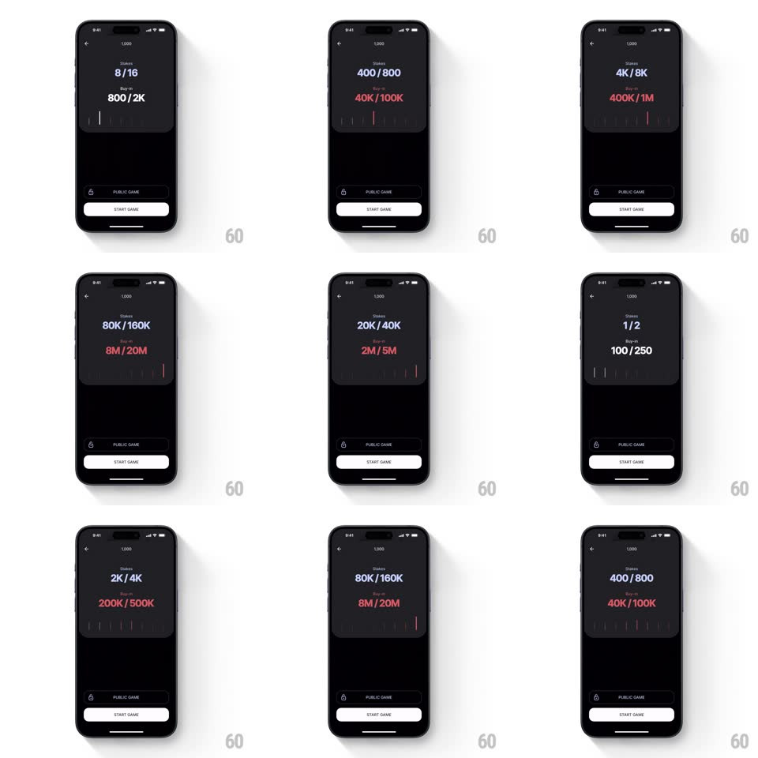

Media
Frame-by-frame

Rebuild this interaction 1:1: Offsuit's stake buy-in slider - drag across a tick ruler and the stakes and buy-in numbers climb through color tiers, from white to blue to red.

Rebuild this interaction 1:1: Offsuit's stake buy-in slider - drag across a tick ruler and the stakes and buy-in numbers climb through color tiers, from white to blue to red. ## Integration Integration: stack-agnostic spec - springs given as stiffness/damping, timed motions as duration + curve; map every value to your framework and animation library of choice. ## Scene A near-black game-setup screen: a dark card holding "Stakes" (e.g. 1/2) and "Buy-in" (e.g. 100/250) in large type, a horizontal tick-mark ruler beneath them, and at the bottom a PUBLIC GAME row and a white START GAME button. ## Motion spec Pattern: color-tiered value slider. - Drag the ruler: the thumb position tracks the finger 1:1; ticks near the thumb stretch taller (height +8px, influence radius ~30px) and the active tick glows. - Values count live: stakes and buy-in digits roll to the selected step (50ms per step while dragging, no lag); steps snap on release with a light haptic tick at each detent while scrubbing. - Color tiers: as values climb, the stakes number shifts white to electric blue and the buy-in number shifts white to hot red - the color interpolates continuously with position (not stepped), so mid-drag states blend. - Ticks ahead of the thumb tint toward red as the tiers rise; ticks behind stay neutral gray. - Release: a soft spring settle (spring ~380/26) onto the detent; numbers pulse once (scale 1 to 1.04, 150ms). - START GAME stays static throughout - all drama lives in the card. ## Calibration - Detents are the discrete stake steps (1/2, 2/4, 8/16, 400/800, 2K/4K...) - the ruler never lands between them. - Number formatting compacts at scale (100/250, 2K/4K, 400K/1M, 8M/20M) - match the K/M abbreviation rules exactly. ## Reduced motion Slider snaps without tick stretching or color blending; tiers change discretely. ## Don't miss - Stakes and buy-in are different colors at high tiers (blue vs red) - they are two axes of risk, not one. - The card glows subtly with the tier color at the top edge as values rise.